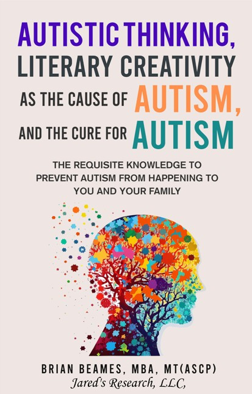

Welcome to this website and I hope that you enjoy it.
This simple website is dedicated to those diagnosed with Autism. It is here to help them to feel good about themselves, and most importantly, to feel normal. It is also to help their family members and basically anyone else who associates with them. I hope I accomplish this goal. If it does I would love to hear from you.
I also have a passion to share knowledge when I have the ability to do so. I hope that the resources I provide you give you greater knowledge on the subject of Autism.
My Book
If this is your first time visiting this website and you have not bought my book, I first recommend that you buy my book
with the title of "Autistic Thinking, Literary Creativity as the Cause of Autism, and the Cure for Autism." Thank you
to those who have already purchased my book and are here because of my book.
You can buy my book at the following locations:
Hardcover and paperback: Amazon
Electronic version: StreetLib
or Bookbeat
Important Documents and Information
I recommend that you visit the supplemental material which I have provided and includes the following
two important documents:
1. An address given by Professor Eugen Bleuler at the opening exercises of the Henry Phipps Psychatric Clinic at The Johns Hopkins Hospital in Baltimore, Maryland on April 16-18, 1913.
This address was provided word for word in my book and it came from this source
document. The document this is found in has the title of autistic_thinking-eugen_bleuler.pdf. This pdf document is 1183 pages long. The speech is found on page 932 of the pdf document. However, if you actually had the physical book with you it would be found on page 873. The speech is entitled "Autistic Thinking" by Eugen Bleuler.
What I have actually find to be amazing about this document is that it seems none of the professional published papers seem to reference this source. I actually find that it gives greater insight into the subject of Autism. Personally, I hope that it helps a little bit to change the trajectory of thinking of others about the subject of Autism.
2. The book with the title of Dementia Praecox or the Group of Schizophrenias by Professor Eugen Bleuler. There is both the original version written in German and then there is the translated version written in English. This book is important because it provides a description on how
Autism became into being. It also describes the earliest precursors
of Autism.
Another great resource for you to consider is found from the book called
The Metamorphosis of Autism: A History of Child Development in England (Social Histories of Medicine) by Bonnie Evans. I found Bonnie Evans' book to be an absolutely fabulous resource on what has happened in the history of Autism.
An important resouce is a paper written by Leo Kanner in 1943 called "Autistic Disturbances of Affective Contact." I found that the very last paragraph of this paper to be very interesting.
Please pay attention to the third word of the second sentence of that paragraph. It would be wise to ask yourself what the greater implications are of this word as it pertains to childhood Autism.
A great article
with the title of "A Concise History of Asperger Syndrom: The Short Reign of a Troublesome Diagnosis" is found here. This document suggests it would be wise to integrate Asperger's Syndrome into the Autism Spectrum Disorders.
A wonderful book called Asperger's Children: The Origins of Autism in Nazi Vienna written by Edith Sheffer is a must read. After reading this book, I personally came away with thoughts that I wanted nothing to do with Hans Asperger.
Please visit the
Defeat Autism For Good Youtube channel.
Comments/Questions and Answers
1. I have received the comment from others that the book which I have written
might be considered controversial. My simple response to this is that
all I did to write my book was read the original sources. I then formed
my own thoughts regarding it and presented my argument to others. I
personally do not think that this is controversial in any way. In my own view,
what I do think is controversial is to diagnose others with autism.
I think this because you are asking an individual to change their
self-concept of themselves when in my view the individual should
choose for themselves what self-concept they should have.
2. Others have asked me if I am on the spectrum after writing this
book. To be fair, individuals who have asked me this question
have not read my book. My firm answer to this question is
absolutely not. After reading my book it should be abundantly
clear to everyone that based upon the history of autism
everyone is normal and should not be labeled with any label
including autism.
3. What do I say to parents of children who are diagnosed with
autism? Do I think they still have autism? In response to these
questions I first want to declare that I do not know the
characteristics, behavior, and mannerisms of your children. You
are more of an expert on your children than I am. That being said,
it is my opinion that parents of children diagnosed with autism
should read all of the source material provided on autism.
They should then determine for themselves whether or not they
then apply that label towards their children. If this is done,
it is my opinion that parents may find it very difficult to apply
the concopet of autism towards their children especially after
all of its history is taken into consideration.
Contact Me
Feel free to contact me in any way you wish.
My autism Twitter account is found here.
My LinkedIn account is found here.
My email address is the following: "autismstudies4u @ gmail .com" (Delete the spaces)
My snail mail address is the following:
Jared's Research, LLC
2248 Meridian Blvd Ste H
Minden, NV 89423-8620
Donate
To donate to this cause
via PayPal please click here.
All currencies that PayPal accepts will be accepted by you.
Prefer to donate by check? Please send a check to the contact snail mail address provided above.
You can donate via cryptocurrency at the following addresses:
Ethereum (ETH): 0x68679d5B499247213D2F3C9f05d87E7128D5D4F7
Bitcoin (BTC): 128PGwTETwPR3uEx8KBuaaSA9f7u6yRRK5
Please note and understand that this is definitely not a charitable organization. Therefore, the likelihood that a donation to this organization is tax deductible is not very strong. Please check with your accountant to make that determination. This statement is not intended to be tax advice in any way.
Thank you so much in advance for your donation.
Please let me know of any ideas and suggestions which you may have.
I would love to hear them.
Thank you.
Brian Beames, MBA, MT(ASCP)
Copyright @ 2017-2024 Jared's Research, LLC. All rights reserved.
This website was last updated on October 1, 2024.
A very special thank you to the website thesitewizard.com for teaching me how to create webpages.